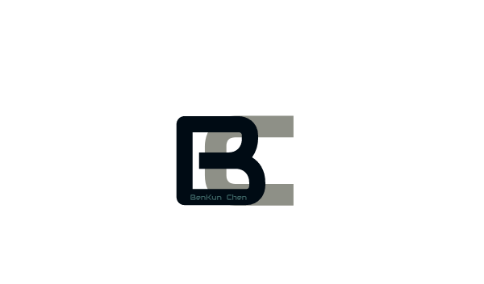

CPSC 594 is a senior undergraduate course offered by the Department of Computer Science at the University of Calgary. It is the capstone course for those students wishing to receive a BSc with a concentration in Software Engineering. The goal of the course is for students to apply their software engineering knowledge in a practical project that is relevant to industry.
In September of 2018, my colleagues and I began a capstone project supervised under Dr. Günther Ruhe. Our team’s goal was to improve the accuracy of a machine learning algorithm used in an HR application created by HireGround. Using Python and Postgres, we employed a learning method called a support vector machine (or SVM) in order to extract different models for resume sections. During the first semester, our team was challenged by not only technical issues, but also managing the scope of the project. Our team’s goals this semester include reconfiguring the existing deep learning algorithm, and training the models that we created from last semester. This project not only taught me the importance of project management, but it also reinforced my interest in the areas of software engineering. I think that projects like these within graduate studies will expand my breadth of knowledge, and become better at software development in teams.
| Deliverable | Description | Deadline |
|---|---|---|
| 1 | All of the historical data needs to be migrated to the new Postgres DB | October 2018 |
| 2 | Resume will be divided into sections where each section is associated with its own parameters for what is valued and what is not, in order to produce a score based on the individual sections | December 2018 |
| 3 | The accuracy of the algorithm will be improved by reconfiguring the deep learning algorithm developed by the UofA. The model also needs to be trained in order to satisfy all other specifications identified, such as the individual section requirement above | Feburay 2019 |
| 4 | Output needs to be displayed on HireGround’s web service in a visually appealing format to satisfy usability requirements | April 2019 |